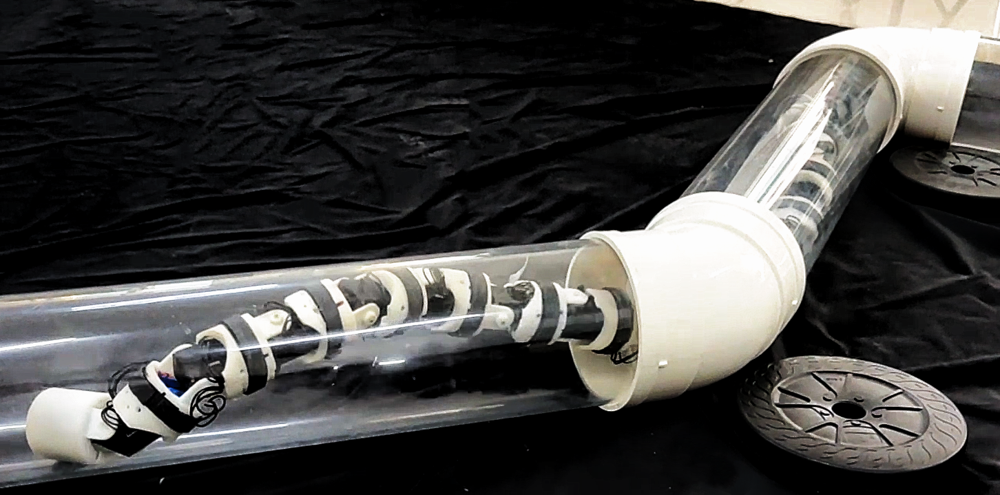
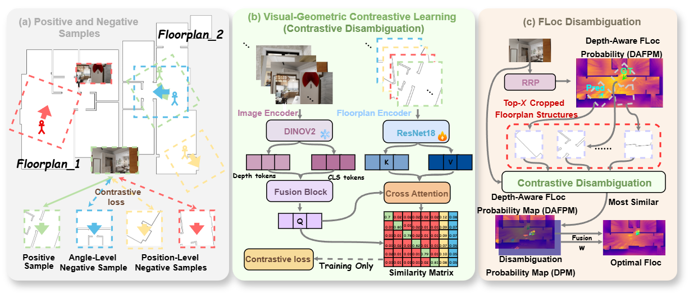
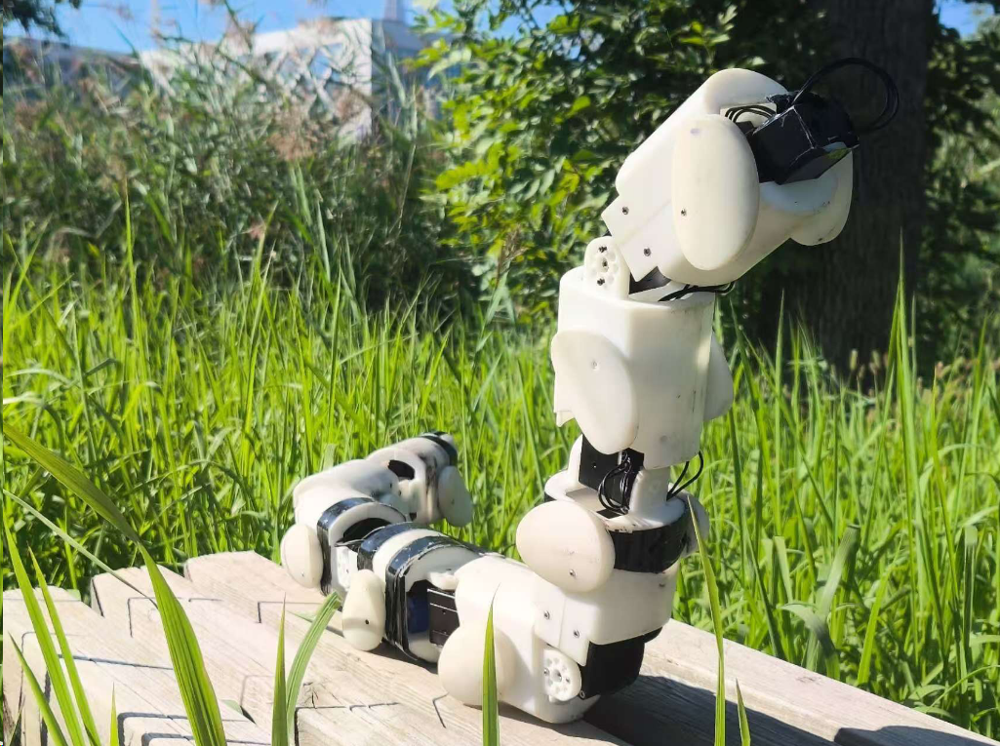

Central South University
School of Computer Science and Engineering
Robotics / VLA / VLN
I am currently a Master's student at Central South University. My research focuses on robotics, especially embodied intelligence, Vision-Language-Action (VLA) models, and Vision-and-Language Navigation (VLN).
School of Computer Science and Engineering
School of Computer Science and Technology
Nanning, Guangxi

2026 IEEE International Conference on Robotics and Automation (ICRA) 2026
This paper proposes Bending Perception-Based Variable Stiffness Control (BP-VSC), enabling a snake robot to efficiently navigate complex pipelines. The method combines an LSTM-based pipe angle detection model with a control strategy that transmits a stiffness wave from head to tail. Experiments on a cable-free distributed platform show that BP-VSC significantly improves pipe navigation performance.

Submitted to arXiv Preprint Under review 2025
Semantic-free floorplan localization via SE(2)-aware contrastive disambiguation.

2025 IEEE/RSJ International Conference on Intelligent Robots and Systems (IROS) 2025
This paper presents a novel snake robot, JiAo, equipped with elliptical wheels that enable both wheeled and body-based locomotion. JiAo demonstrates its versatility by effectively performing a wide range of tasks in challenging scenarios.